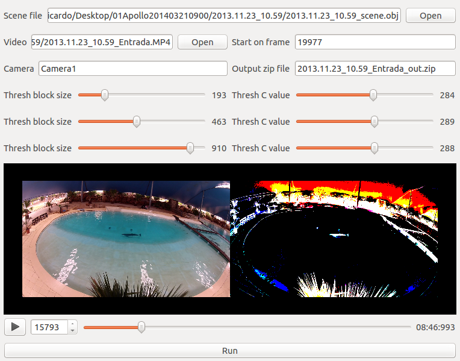
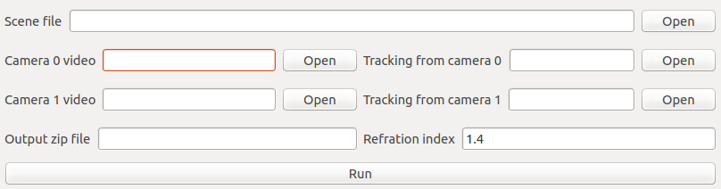

How to use¶
Obtain the 3D path of the dolphin¶
- Record 2 sychronized videos of a dolphin swimming on a pool.
- Create an OBJ file representing the real world scenario with the py3dscene-editor application.
- Execute the application d-tracker-singlecam for each of the cameras to extract the dolphin centroid.
- Use the pythonvideoannotator application (v1.5) to correct any error on the tracking.
- Execute the application d-tracker-smoothpath to combine the cameras information and reconstruct the 3D path of the Dolphin.
D-Track¶
d-tracker-singlecam¶
This application is used to segment the images of each camera and find the dolphin in the pool.
| FIELD | DESCRIPTION |
| Scene file | OBJ file describing the pool. This file is generated by the py3dscene-editor application. |
| Video | Video file captured with a camera. |
| Start frame | First frame of the video to analyse. |
| Camera | Name given to the camera on the py3dscene-editor application. |
| Output zip file | Name of the output zip file. |
| Thresh block size | Parameter of the cv2.adaptiveThreshold for the blue component of each frame. |
| Thresh C value | Parameter of the cv2.adaptiveThreshold for the blue component of each frame. |
| Thresh block size | ... |
| Thresh C value | ... |
| Thresh block size | ... |
| Thresh C value | ... |
d-tracker-smoothpath¶
This application is used merge the output of the d-tracker-smoothpath application of the 2 cameras.
| FIELD | DESCRIPTION |
| Scene file | OBJ file describing the pool. This file is generated by the py3dscene-editor application. |
| Camera 0 video | Video file captured with a camera 0. |
| Tracking from camera 0 | CSV output file from the d-tracker-singlecam. |
| Camera 1 video | Video file captured with a camera 1. |
| Tracking from camera 1 | CSV output file from the d-tracker-singlecam. |
| Output zip file | Name of the output zip file. |
| Refraction index | Refraction index to use to calculate the 3D position. |